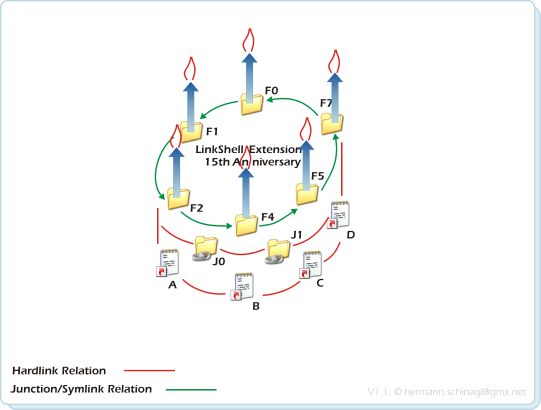

Last Updated May 2, 2014
Unfortunatley Microsoft put Hardlinks, Junction and Symbolic Links primitives into the operating system but completley forgot the things which can be done with these primitives. As soon as you have used hardlinks, and e.g. wanted to copy them with Windows-means to a different drive, the mess would begin, because one would break all hardlinks during the copy. There are many other issues like this, and this is the point where LinkShellExtension and its commandline sibling ln.exe jump in.
But not only jump in, but also go ahead and implement uses cases, like the famous delorean copy, which is an incremental hardlink based backup solution. Some other vendors call very similar functionality Time Machine.... BTW: Have you ever guessed why it is called Delorean Copy? Knowing that a Delorean and a Flux Compensator was the first working time machine should give you a hint;-)
In the meantime I jumped deep into the Win32 filesystem API, sometimes deeper than it is allowed. LSE and ln.exe bypass the Kernel32 API in wide ranges and rely on Ntdll.dll to improve speed and do things which can't be done that easy otherwise.
I don't know how many times my tools have been downloaded, but Link Shell Extension and ln.exe are quite popular on many free/shareware download sites, like heise, CNet .... Both tools found its way also into many small articles of magazines and accompanying DVDs.
From the feedback and questions I received, I know that those two beasts are heavily used, even in semi-professional use cases and for sure hobbiest areas.
So .... enough said, use it have fun, be happy that these beasts save your time and celebrate!

Link Shell Extension
ln.exe
Delorean
Copies

Wait! It is easy if a Delorean Copy contains no files with ReadOnly attributes. Otherwise it's getting sophisticated:
(Management summary: ln.exe --deeppathdelete can do it from 2.873 on)

- A Source was used to create three successive Delorean Copies: Bkp1,Bkp2,Bkp3. File B is ReadOnly in the Source and in all Delorean Copies. So far so good.
- When it comes to delete Bkp2 the Readonly attribute of Bkp2/B has to be removed, otherwise deletion is impossible.
- Due to the fact that all siblings of a hardlink share the same attribute and the same date, the readonly attributes of Bkp1/B and Bkp3/B are also 'changed'. This is shown via the blue dotted lines. Called it 'Hardlink Attribute Teleportation'
- This results now in having a different attribute in Bkp1/B and Bkp3/B than in Source/B. This is shown via the grey dotted line.
- A fourth delorean copy with Source and Bkp3 as Backup to Bkp4 is created.
- Since the attributes of Bkp3/B and Source/B are different, the file Bkp4/B was copied over freshly from Source/B. So there is no hardlink between Bkp3/B and Bkp4/B, which is shown with the light red dotted line, and which is the basic problem.
- Before deleting Bkp2/B retrieve at least one hardlink sibling, e.g. Bkp1/B
- Delete Bkp2/B
- Restore the attribute of Bkp2/B to one hardlink sibling, which has been retrieved in 1. e.g. Bkp1/B and rely on Hardlink Attribute Teleportation, so that it spreads to all other siblings.